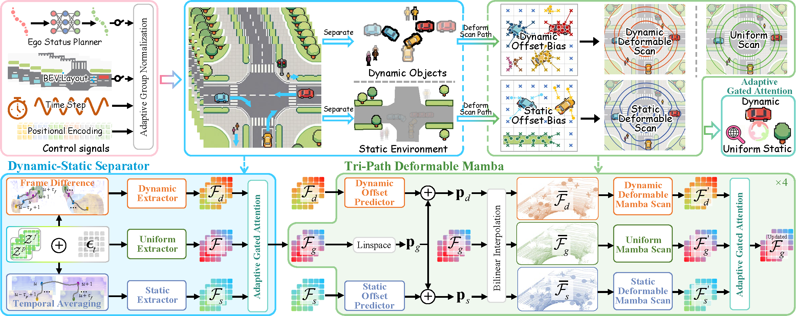

World models, which simulate environmental dynamics and generate sensor observations, are gaining increasing attention in autonomous driving. However, progress in LiDAR-based world models has lagged behind those built on camera videos or occupancy data, primarily due to two core challenges: the inherent disorder of LiDAR point clouds and the difficulty of distinguishing dynamic objects from static structures.
To address these issues, we propose GEM: a Generative LiDAR world model that leverages dEformable Mamba architecture, significantly improving fidelity and imaginative capability. Specifically, leveraging the structural similarity between sequential laser scanning and Mamba's processing mechanism, we first tokenize LiDAR sweeps into compact representations via a custom LiDAR scene tokenizer. After unsupervised disentanglement of tokenized features via a dynamic-static separator, a tri-path deformable Mamba is introduced to perform selective scanning and adaptive gating fusion over the disentangled features, leading to enhanced spatial-temporal understanding of the world evolution.
Optionally, a planner and a BEV layout controller can be integrated to explore the model's capability for autonomous rollout and its potential to generate "what-if" scenarios. Extensive experiments show that GEM achieves state-of-the-art performances across diverse benchmarks and evaluation settings, demonstrating its superiority and effectiveness.
GEM consists of three key components: (1) a LiDAR Scene Tokenizer that converts raw point clouds into structured token representations; (2) a Dynamic-Static Separator that disentangles dynamic objects from static backgrounds in an unsupervised manner; and (3) a Tri-path Deformable Mamba that performs selective scanning with adaptive gating fusion for spatial-temporal world modeling.

@inproceedings{wu2026gem,
title={GEM: Generating LiDAR World Model via Deformable Mamba},
author={Wu, Yang and Liu, Zhaojiang and Meng, Qiang and Liu, Youquan and Weng, Renliang and Qian, Jianjun and Yang, Jian and Xie, Jin},
booktitle={Proceedings of the IEEE/CVF Conference on Computer Vision and Pattern Recognition (CVPR)},
year={2026}
}